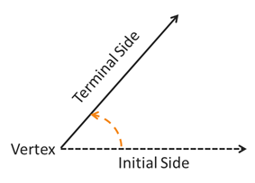

Angle Measure
Trigonometric Functions
Trigonometric Functions
Probably the most fundamental concept of this course is that of an angle, which we can intuitively describe as a rotation. In particular, let's define an angle as the amount of rotation applied to a ray about a fixed point called a vertex. The starting position of the ray is called the initial side and the ending position is called the terminal side. If the rotation is in a counterclockwise direction, then the angle is positive. If the angle rotates in a clockwise direction, then the angle is negative. The amount of rotation in either direction is unrestricted, meaning the ray can rotate about the vertex with multiple complete revolutions.
In order for us to talk about angles mathematically using concepts we already know, like graphs and functions, it is helpful to define a standard way to draw angles. An angle is drawn in standard position if its vertex is at the origin and the initial side is along the positive \(x\)-axis.
Which of the following illustrations gives an angle in standard position?
The direction of the rotation does not effect whether the angle is in standard position or not. The angle in the first graph is located with its vertex at the origin, but its initial side is not on the positive \(x\)-axis. Similarly, the angle in the third graph has an initial side that is parallel to the positive \(x\)-axis, but its vertex is not located at the origin. So only the angle given in the 2nd graph would be in standard position because its vertex is at the origin and its initial side is along the positive \(x\)-axis.
©2025 M4thG33x (new window) Some Rights Reserved.